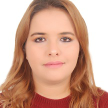

|  |
Sanae ouajhainMaster's in softwar engineering and I work in a call center I'm Web developer I love coffe and morrocan the contact contact me !! |
Professional experiences
| years | Activity |
|---|---|
| 2016 - Now | Agent Back Office Bell Canada (Sitel) In Rabat |
| 2014 - 2016 | Agent In webhelp Rabat |
| 09/2014 - 12/2014 | Training course in the company B. Aerospace Casablanca PHP training course I created a lot of site in PHP |
| 03/2014 - 05/2014 | Training course in the propixel communication agency: Design of websites - Rabat |
Educations
| years | Activity |
|---|---|
| 2015 - 2017 | Specialized Master in Computer Science Development Engineering Rabat Faculty of Sciences |
| 2012 - 2014 | Bachelor of Science in Mathematics and Computer Science Track: Engineering Software at the Faculty of Sciences of Rabat |
| 2009 - 2012 | Diploma of General University Studies (DEUG) in Sciences Mathematics And Computer Science At The Faculty Of Sciences Rabat |
| 22007 - 2008 | Baccalaureate Life and Earth Sciences at Madariss Al High School Hassania Rabat (Mention A.Bien) |
Skills
|
| ||||
|
| ||||
|
| ||||
|
| ||||
| |
Langage
|
| ||||
|